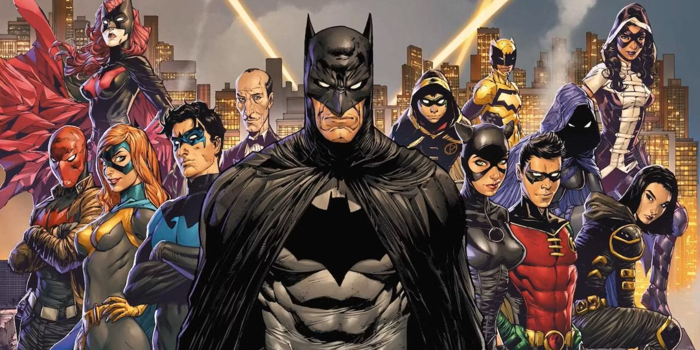

First Appearance: Batman #16 (April 1943)
Biography:
Alfred was the loyal butler to the Wayne family before the tragic death of Thomas and Martha Wayne, he would
later become a father-figure to the orphaned Bruce Wayne.
Alfred has an extremely rich backstory, with writers often depicing him with either military or intellience
background. He is extremely skilled in medicine, espionage, and hand-to-hand combat, making him one of Bruce’s
most trusted allies .
Reading Recommendations:

First Appearance: Dectective Comics #38 (April 1940)
Biography:
Dick Grayson is the first adoptive son of Bruce Wayne, as well as the first partner of Batman. Robin was
introduced into the comics to draw in younger readers by having a character their own age to relate to.
Growing up as part of the circus act “The Flying Grasyons” in “Haly’s Circus”, Dick was a skilled acrobat from
an extremely young age. Unfortunately, like in many comic stories, tragedy soon struck. Circus owner “C.C.
Haly” found himself in debt to crime lord “Tony Zucco” and when Mr. Haly was unable to pay, Zucco instructed
his men to cut the ropes of the Flying Grayon’s no-trapeze act, resulting in the death of Dick’s parents.
Seeing himself in Dick Grayson and not wanting him to end up like he had, Bruce Wayne, who had been in the
audience, adopted the young boy hoping to provide him a better life. Dick would quickly learn of Bruce’s alter
ego and Bruce would offer to train Dick to better channel his anger. After rigerous training, the two would
successfully track down Zucco so that he may face justice for the murder of Dick’s parents.
Bruce and Dick (now Robin) would become an inseparable pair, working together for years to bring justice to
Gotham. But as Dick got older a rift between the two began to form, resulting in Dick leaving Batman’s side
and abandoning the Robin mantle. Dick would find new allies with a group of young heroes and together they
would form the “Teen Titans”, Dick also adopted the new persona of “Nightwing” in order to carve his own
legacy as a hero out of the shadow of his former mentor.
Dick has had many adventures since his introduction to the comics, from Batman’s sidekick Robin, to his own
hero as Nightwing, to even becoming Batman himself for a time. Dick’s story continues to expand as he
contiunes to be among the most popular and well written characters to appear in the comics.
Reading Recommendations:
First Appearance: Batman #357 (March 1983)
Biography:
In an attempt to keep younger readers engaged by introducing a young character alongside Batman—while also
allowing Dick Grayson to mature and have his own stories—writer Gerry Conway introduced Jason Todd as
the
second Robin, taking Dick’s place. This intention to have Jason replace Dick is especially evident in Jason’s
original origin story, which was essentially a carbon copy of Dick’s.
Jason was part of The Flying Todds, an acrobat family employed by Haly’s Circus, before his parents
were killed by Waylon Jones, aka Killer Croc. He was ultimately adopted by Bruce Wayne and became Robin
in
Detective Comics #526 (May 1983).
Jason’s origin story, like many others, was changed during Crisis on Infinite Earths (1985–1986), a
historic
comic book event that reshaped the entire DC Universe for a more modern audience. Jason was no longer a copy
of Dick Grayson but instead had a much darker and grittier backstory. In this revised origin, he was the son
of Willis Todd, a small-time crook working for Two-Face who was presumed dead after a job gone wrong,
and
Catherine Todd, a drug addict who eventually overdosed, leaving Jason orphaned.
This version of Jason was introduced in Batman #408 (June 1987), where he was caught by Batman while
attempting to steal the wheels off the Batmobile—in the very alley where Bruce had witnessed his own parents
being murdered as a child. Rather than punishing the boy, Bruce saw a mix of desperation and survival instinct
in him. Hoping to provide Jason with a better life, Bruce placed him in a school for wayward boys. However,
the school was soon revealed to be a front for training young boys to be thieves. Jason uncovered its secrets
and exposed the operation, leading Batman to recognize his potential. Impressed, Bruce chose to adopt Jason
and train him as the new Robin.
This decision proved to be a challenge, as Jason was drastically different from his predecessor, Dick. He was
far more aggressive, often using excessive force on criminals, frequently questioning Bruce’s authority, and
regularly ignoring orders. His reckless attitude quickly soured readers’ opinions, ultimately leading to the
storyline A Death in the Family (August–November 1988).
In this story, Jason learns that Catherine Todd was not his biological mother and embarks on a journey to find
his real mother. His search takes him to Ethiopia, where he meets Dr. Sheila Haywood—his true mother.
However,
this turns out to be a trap orchestrated by The Joker, who had been blackmailing Sheila to lure Jason
away
from Batman. The Joker viciously beats Jason with a crowbar before leaving him and Sheila trapped in a
warehouse rigged with explosives. As Batman races to save him, the building detonates, leaving Jason’s fate
uncertain.
Writer Jim Starlin and illustrator Jim Aparo prepared two versions of the following issue: one
where Jason
survives and one where he dies. The decision was left to the readers, who could vote by calling one of two
phone numbers to determine Jason’s fate. Due to Jason’s unpopularity among fans, a narrow margin resulted in
his death winning the vote. This moment has often been referred to as Batman’s greatest failure.
Jason remained dead for years, with his death continuing to haunt Batman—until Batman: Hush (2002–2003), where
it was revealed that his grave was empty. His full resurrection occurred in Infinite Crisis (2005). The
storyline Under the Hood (2004–2006) explored Jason’s return to life.
During Infinite Crisis, Superboy-Prime, a villain with the ability to alter reality, inadvertently restored
Jason to life. In a single-panel image, Jason was shown crawling out of his grave. However, while his body had
been revived, his mind had not, leaving him in a state of total memory loss. He wandered through Gotham before
eventually collapsing and being admitted to a hospital, where he remained catatonic for several months.
Jason eventually recovered enough to escape, catching the attention of Talia al Ghul, who took him from Gotham
and restored his memories using a Lazarus Pit. While the pit successfully revived his mind, it also left him
even more vengeful and unstable than before his death.
Under Talia’s guidance, Jason underwent extensive training, honing his skills in firearms, explosives, and
strategic planning. She also continued to fuel his resentment toward Batman for failing to save him and for
allowing the Joker to live. With his newfound expertise, Jason returned to Gotham, now adopting the former
alias of his killer—The Red Hood.
As the Red Hood, Jason quickly made a name for himself by dismantling Gotham’s criminal organizations.
However, unlike Batman, who adhered to a strict no-kill rule, Jason had no reservations about eliminating
criminals and taking over their operations. His ultimate goal was to get Batman’s attention—and he succeeded.
Jason eventually captured and kidnapped the Joker. When Batman arrived to confront him—having already deduced
the Red Hood’s true identity—Jason forced Bruce to make an impossible choice: either Bruce kills Jason, or
Jason kills the Joker. Bruce, unwilling to choose, turned to leave. In frustration, Jason threw a bomb,
forcing Batman to save the Joker rather than stopping him, allowing Jason to escape.
For years, Jason continued to serve as both an adversary and an uneasy ally to Batman and his associates. Over
time, he found a more complicated place within the Bat-Family, united by their shared goal of protecting
Gotham. Jason’s character continued to evolve as he struggled between the ruthless killer Talia had trained
him to be and the good man his adoptive father still believed he could become.
Reading Recommendations: